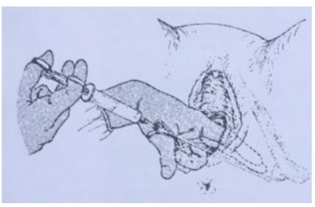
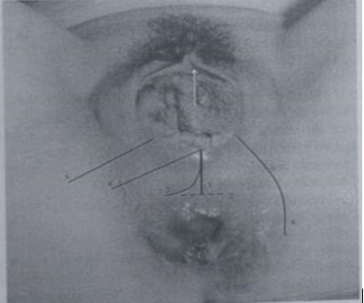
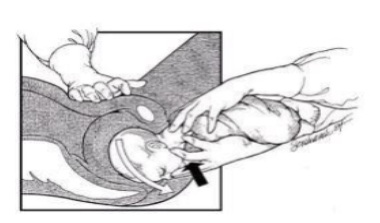

Questão 1 · Segundo periodo expulsivo · Primeiro periodo dilatação · Obstetrícia · 4000141813Em relação ao intervalo de tempo que a ausculta fetal intermitente deve ser realizada na assistência ao parto na fase ativa (primeiro período) e no período expulsivo (segundo período), respectivamente, assinale a alternativa CORRETA.
A 10 minutos em ambos
B 30 minutos em ambos
C 10 minutos e 10 a 15 minutos
D 15 a 30 minutos e 5 minutos
E 60 minutos e 15 minutos
Questão 2 · Obstetrícia · Indicações de cesárea · 4000138491Assinale a alternativa que apresenta uma condição que é indicação absoluta de cesárea.
A cabeça derradeira.
B descolamento prematuro de placenta, com feto morto.
C placenta prévia centro-total, com feto morto.
D apresentação pélvica com feto vivo.
E pré-eclâmpsia com feto vivo.
Questão 3 · Rotação externa · 4000138363Versão cefálica externa é um procedimento que consiste na transformação de apresentação pélvica em cefálica mediante suave manipulação no abdome materno, sendo assim, assinale a alternativa incorreta sobre o assunto:
A É realizada preferencialmente com 37 semanas de gestação.
B Deve ser realizada em ambiente hospitalar.
C O uso de anestesia geral está contraindicado.
D Cesárea prévia é uma contraindicação absoluta para a versão cefálica externa.
E Obesidade materna é uma contraindicação relativa para a versão cefálica externa.
Questão 4 · Obstetrícia · Indicações de cesárea · 4000138360São indicações absolutas de cesariana, exceto:
A Prolapso de cordão.
B Morte materna com feto vivo.
C Apresentação pélvica.
D Cicatriz uterina prévia corporal.
E Herpes genital ativo.
Questão 5 · Desprendimento espáduas · 4000138039Gestante em período expulsivo, apresenta o sinal da tartaruga com consequente di culdade para a extração fetal. Considerando esse contexto, qual a primeira manobra a serrealizada nesta distócia?
A Deventer- Muller.
B Zavanelli
C McRoberts
D Mauriceau
E Bracht.
Questão 6 · Fase ativa · O trabalho de parto e o parto · 4000137976Gestante, 27 anos de idade, primigesta, encontra-se com 34 semanas de gestação. Em consulta de pré-natal de rotina, quer se preparar para o trabalho de parto e conhecer detalhes da assistência ao parto de baixo risco. Deve-se informar, corretamente, que.
A se recomenda massagem perineal durante o segundo período do parto.
B se considera trabalho de parto estabelecido quando a dilatação cervical é de pelo menos 4 a 6 cm, acompanhada de contrações uterinas regulares.
C se considera terceiro período do parto prolongado após decorridos 60 minutos do nascimento.
D o acompanhamento do trabalho de parto pode ser realizado por médico obstetra ou enfermeira obstétrica, que devem escutar o batimento cardíaco fetal a cada duas horas.
E a duração normal da fase ativa do segundo período do trabalho de parto nas primíparas sem analgesia é de uma a cinco horas.
Questão 7 · Segundo período período expulsivo · 4000133983O uso da episiotomia caiu nos últimos 30 anos, devido ao seu uso restrito ao invés de rotineiro. Entretanto, este ainda é um procedimento comum na prática médica. A indicação de episiotomia não pode ser considerada nos casos de:
A Distocia de ombro.
B Feto macrossômico.
C Crescimento intrauterino restrito.
D Parto vaginal operatório.
Questão 8 · Segundo periodo expulsivo · Obstetrícia · 4000133747O trabalho de parto e o parto são fenômenos siológicos, mas passíveis da ocorrência de eventos complicadores e consequentes desfechos adversos, sendo um dos pilares da boa prática obstétrica a adequada assistência ao parto. Dessa forma, em uma paciente de risco habitual, é recomendada pela OMS, a realização rotineira de:
A clampeamento precoce do cordão umbilical.
B episiotomia mediolateral direita no 2º período.
C ocitocina intramuscular após saída do ombro anterior.
D obtenção de acesso venoso para possível administração de medicação.
Questão 9 · Modif icações f isiologicas do puerpério · Obstetrícia · 4000132467O puerpério é um período marcado pelo retorno das modi cações siológicas da gestação à condição pré-gravídica. Em relação ao puerpério, é correto afirmar que:
A Mulheres que não amamentam podem ovular com 25 dias de puerpério.
B O útero está na altura da cicatriz umbilical logo após o parto e diminui em média 3 cm por dia nos dias subsequentes.
C Os lóquios sanguinolentos são seguidos pelos lóquios alvos e, por último, pelos lóquios serossanguinolentos.
D O orifício cervical interno persiste aberto até 14 dias após o parto.
Questão 10 · Distócia de ombro · Obstetrícia · 4000132457São consideradas manobras de primeira linha para tratamento da distocia de ombros:
A Manobra de McRoberts, pressão suprapúbica e retirada do braço posterior do feto.
B Pressão suprapúbica, Manobra de Kristeller e Manobra de Rubin.
C Sinfisiotomia, Manobra de Rubin e retirada do braço posterior.
D Manobra de Kristeller, clidotomia e Manobra de McRoberts.
Questão 11 · Bloqueio regional · 4000132380Das técnicas abaixo, qual apresenta maior efetividade para a analgesia de parto?
A Bloqueio espinhal.
B Bloqueio de nervo pudendo.
C Meperidina.
D Analgesia venosa controlada pelo paciente.
Questão 12 · Obstetrícia · 4000130999De acordo com a Organização Mundial de Saúde é correto afirmar sobre a assistência ao parto:
A A parturiente deve ser orientada de que a fase latente dura por volta de 5 horas.
B A duração da fase ativa é de cerca de 5 horas.
C A dilatação de 1 cm/hora na fase ativa é excelente marcador para identificar mulheres em risco de resultados adversos.
D A fase ativa é caracterizada por dilatação cervical mais rápida de 5 cm até a dilatação total.
Questão 13 · Assistencia ao parto pélvico · 4000130997O parto em feto de apresentação pélvica é cada vez menos realizado. No entanto pode haver situações em que ele pode ser necessário. Sobre o atendimento ao parto pélvico pode-se afirmar:
A Pode ser utilizada a manobra de McRoberts para aumentar os estreitos médio e inferior da bacia.
B É dispensado o uso do partograma, já que não há como representar o polo pélvico no gráfico.
C Não há necessidade de auxiliares devido à baixa taxa de complicações.
D Nos casos de cabeça derradeira está indicado o fórcipe de Kieland.
Questão 14 · Aspectos f etais · Prolapso de cordão · 4000130995Sobre as distocias do cordão umbilical é correto afirmar:
A Procidência é a presença do cordão umbilical antes da apresentação após a amniorrexe e, mesmo no feto morto, está indicado cesariana.
B Procúbito é a presença do cordão umbilical antes da apresentação estando o saco amniótico íntegro, se identificado pela ultrassonografia indica cesariana.
C Prolapso é a presença do cordão umbilical antes da apresentação com o saco amniótico íntegro, indicando parto vaginal com bolsa íntegra.
D As circulares de cordão são propiciadas pela oligodramnia e o pós-datismo e indicam formalmente a cesariana.
Questão 15 · Assistencia ao parto pélvico · 4000120218Durante o parto vaginal em apresentação pélvica, a manobra usada após a saída do polo pélvico é
A erguimento do tronco, com o dorso fetal em direção à pube, colocando o diâmetro bisacromial transversalmente à bacia.
B abaixamento do polo pélvico e deslocamento lateral do dorso fetal para liberação dos ombros.
C tração em direção inferior do dorso fetal até que o diâmetro bisacromial fique em sentido perpendicular ao diâmetro transverso da bacia.
D tração leve e constante do polo pélvico, oscilando lateralmente repetidas vezes até o desprendimento dos ombros.
E posicionamento do dorso fetal para baixo em direção à fúrcula vaginal para o desprendimento das espáduas.
Questão 16 · Segundo período período expulsivo · 4000108317Durante o parto vaginal de feto macrossômico, o obstetra pede consentimento da parturiente para realizar episiotomia médiolateral direita, caso seja necessário, e é autorizado. Assim, se decidir realizar esse procedimento, deverá fazê-lo
A no momento em que o polo cefálico distende o períneo, em ângulo de 60º da linhamédia.
B imediatamente antes do desprendimento dos ombros, seccionado o introito vaginal.
C durante a distensão perineal, na linha média, seccionado o músculo levantador do ânus.
D imediatamente antes da inserção do fórceps de Simpson, seccionado o introitovaginal.
E quando o polo cefálico atinge a posição +2, em ângulo de 45º com a linha média.
Questão 17 · Manobra de Brach · 4000078446No parto pélvico, a manobra de Bracht consiste em
A compressão supra-púbica.
B elevação do dorso fetal em direção ao abdômen materno
C deixar a cabeça fetal pendente, sem sustentação, por 20 segundos.
D rotação do dorso da posição posterior para anterior.
E hiperflexão das coxas maternas para ampliar o estreito superior da bacia.
Questão 18 · Segundo periodo expulsivo · 4000074424Primigesta, 22 anos, em consulta pré-natal, quer saber mais informações sobre episiotomia, porque viu na televisão uma reportagem sobre violência obstétrica. Para uma orientação correta a esta paciente, o médico que atende deverá saber que: Assinale a correta:
A A episiotomia mediana apresenta baixo risco para lacerações de terceiro ou quartograu e apresenta grande efeito protetor para lacerações.
B A episiotomia pode ser realizada sem o consentimento da parturiente, não sendonecessário obter seu consentimento esclarecido antes da realização da mesma.
C Não há evidências cientificas suficientes para definir as indicações para a episiotomia,apenas que o uso seletivo continua a ser a melhor prática a ser adotada.
D A episiotomia realizada de forma seletiva, bem justificada, com técnica correta, ésempre necessária para evitar roturas perineais importantes.
Questão 19 · Fases clínicas do parto · 4000047529A assistência clínica ao parto estuda os procedimentos que devem ser adotados no acompanhamento do trabalho de parto. O parto é dividido em 4 períodos ou fases clínicas distintas. Sobre as fases clínicas e assistência ao parto é correto a rmar que:
A o 2º período do trabalho de parto inicia-se quando ocorre apagamento total do colo uterino, sem dilatação ainda. É vital o acompanhamento dos batimentos cardíacos fetais nesse período.
B o 3º período começa antes do desprendimento da cabeça fetal e termina com a saída da placenta, que é extraída imediatamente com tração manual contínua em partos vaginais.
C o 4º período clínico é marcado por miorelaxamento e obliteração por trombose vascular no útero (trombotamponamento). É importante a observação de sangramentos excessivos nesse momento.
D no final da 2ª fase clínica do parto ocorre o desprendimento total do feto, nesse período a atividade uterina é máxima e a dilatação do colo é total.
E na 1ª fase clínica do parto inicia com contrações uterinas ainda não sem potencial de dilatar o colo uterino, sendo mandatório o emprego de ocitocina exógena nessa fase.
Questão 20 · Medidas gerais · Tratamento na HPP · Assistência ao puerperio · 4000032937Durante o plantão em um hospital geral, o médico avalia uma puérpera que foi trazida por um taxista, acompanhada da irmã. O parto ocorreu em casa, há cerca de 25 minutos. O neonato pesou 4.230g, encontra-se bem e exibe um choro vigoroso. A mulher, aos 26 anos de idade é tercípara e informa que o primeiro parto foi por via vaginal e o segundo foi por cesariana, pois a criança estava assentada. O sangramento genital parece abundante e o cordão umbilical encontra-se visível no introito vaginal. Assinale a medida MAIS IMPORTANTE a ser tomada neste momento.
A Administrar cefalotina por via venosa
B Administrar ocitocina por via intramuscular
C Realizar ultrassonografia abdominal
D Tracionar o cordão umbilical
Questão 21 · Bloqueio regional · Métodos de alivio da dor no parto · Assistência ao puerperio · 4000019537Paciente primigesta, com gestação a termo, procura atendimento em hospital de nível secundário apresentando quadro de dor em baixo ventre rítmica e perda de tampão mucoso. O exame admissional evidencia dilatação do colo uterino de 6,0cm, concepto em apresentação cefálica, frequência cardíaca fetal de 148 bpm e pressão arterial de 120x70mmHg. Nega doenças crônicas, uso de medicações ou alergias conhecidas. Para garantir atendimento humanizado durante o trabalho de parto, deve ser oferecido:
A Puxos orientados, amniotomia precoce, enterocilsma e delivramento ativo.
B Acompanhante de livre escolha, alimentação leve, tricotomia pubiana e verticalização.
C Enteroclisma, estimular deambulação, métodos não farmacológicos para alívio da dor e toques vaginais 4/4 horas.
D Bloqueio combinado raqui/peridural, posição materna de livre escolha, acompanhante de livre escolha e agentes uterotônicos no pós-parto.
Questão 22 · Fase ativa · 4000013405Acerca do manejo adequado do trabalho de parto, bem como do tratamento e da prevenção de suas complicações, julgue o item a seguir. Uma estratégia e caz para reduzir a necessidade de administração de ocitocina exógena e a taxa de cesariana é internar a paciente em trabalho de parto a partir do momento em que ela apresentar seis centímetros de dilatação cervical e uma frequência mínima de duas contrações a cada dez minutos.
A Certo.
B Errado.
Questão 23 · O trabalho de parto e o parto · 4000118559O parto vaginal pode ser realizado rotineiramente nos casos de
A circular de cordão.
B mãe com HIV e carga viral acima de 1.000 cópias/mL.
C gêmeos monozigóticos.
D cesária corporal anterior.
E herpes genital ativo.
Questão 24 · Indicações de cesárea · 4000115352É indicação absoluta de cesariana:
A Pré-eclâmpsia grave
B Placenta prévia centro-total
C Primigeta com mais de 35 anos
D Condiloma vulvar
E Macrossomia fetal
Questão 25 · Segundo periodo expulsivo · 4000111982Manobra condenável durante o trabalho de parto, onde o fundo uterino é comprimido pela borda cubital do antebraço do assistente, com a finalidade de facilitar a expulsão fetal:
A Mauriceau.
B McRoberts.
C Kristeller.
D Bracht.
Questão 26 · Terceiro periodo dequitação · 4000105893Em uma paciente sem doenças, submetida a parto vaginal de termo, 10 minutos após o nascimento, não ocorreu a dequitação. Qual é a conduta indicada para o caso?
A Aguardar pelo menos mais 20 minutos para manobras.
B Extração manual da placenta com antibioticoprofilaxia.
C Administração de derivados do ergot intramuscular.
D Laparotomia por suspeita de acretismo placentário
Questão 27 · Técnicas de Bloqueios Nervosos Perif éricos · Bloqueio de Nervos Perif éricos · Cirurgia · 4000105742Qual é a referência anatômica utilizada para realizar o procedimento anestésico representado na figura abaixo?

A Sínfese púbica.
B Linha íleo pectínea.
C Espinha isquiática.
D Forame obturatório
Questão 28 · Fases clínicas do parto · 4000097029Uma gestante de 37 semanas, com queixa de dor em baixo ventre, ao exame físico apresenta duas contrações em 10 minutos de observação, com duração de 50 segundos. Ao toque, colo dilatado 4 cm, esvaecido, feto alto e xo. Pode-se afirmar que se trata de:
A trabalho de parto prematuro
B falso trabalho de parto prematuro
C contrações de Braxton-Hicks
D trabalho de parto
Questão 29 · Assistencia ao parto pélvico · 4000096930Na condução de trabalho de parto com feto em apresentação pélvica, a complicação mais temida é:
A Distócia de ombro.
B Distócia de rotação.
C Distócia de partes moles.
D Cabeça derradeira.
Questão 30 · Quarto período primeira hora pós parto período de Greenberg · 4000096578Não faz parte do quarto período de Greenberg:
A Atonia uterina.
B Miotamponagem.
C Trombotamponagem.
D Indiferença miouterina.
Questão 31 · Introdução · 4000091783Considerando as atuais recomendações da Organização Mundial da Saúde para assistência ao parto (2018), assinale a alternativa correta.
A A pelvimetria clínica deve ser realizada habitualmente antes de definir a via de parto.
B Considerar período expulsivo prolongado em primíparas quando for maior que duas horas.
C O antibiótico profilático deve ser em dose única, para os partos vaginais não complicados.
D A ligadura do cordão umbilical deve ser realizada apenas após completar o primeiro minuto após o nascimento.
E Não se deve mais utilizar rotineiramente a administração de vitamina K intramuscular para os recém-nascidos.
Questão 32 · Prolapso de cordão · 4000085917Durante o período expulsivo em uma primípara de 27 anos, gestação única, cefálica, a termo, e com dilatação total, ocorre rotura espontânea da bolsa amniótica, com saída de grande quantidade de líquido claro, com grumos, conjuntamente com o prolapso do cordão umbilical. A conduta adequada, imediata, a ser tomada é:
A Aplicação de fórceps de alívio, devido à dilatação total, para abreviar o período expulsivo, enquanto aplica-se pressão no fundo do útero.
B Decúbito lateral e encaminhamento o mais breve possível para o centro cirúrgico para a realização de uma cesariana de emergência.
C Colocação da gestante em posição genupeitoral e introdução dos dedos do obstetra na vagina, empurrando para cima a apresentação.
D Ausculta com sonar de forma interminente e encaminhamento para o centro obstétrico em decúbito ventral para a realização de uma cesariana imediata.
Questão 33 · Fases clínicas do parto · 4000021442Com relação às fases clínicas do parto, pode-se afirmar que:
A o 2° período começa com a dilatação total da cérvice e termina com a expulsão do feto
B o 1° período consiste no período prodrômico
C o secundamento ocorre no 2° período do parto
D o 4° período caracteriza-se pelo descolamento, pela descida e pela expulsão da placenta e dos anexos
E o final do 2° período é o momento em que a paciente deve ser encaminhada ao pré - parto
Questão 34 · Quarto período primeira hora pós parto período de Greenberg · 4000018091Julgue o item a seguir, relativo a pré-natal, parto e puerpério. O quarto período do parto (ou de Greenberg) se inicia após a dequitação, estende-se por uma ou duas horas e pode ser caracterizado por eventos importantes na prevenção de hemorragias: miotamponamento, hemotamponamento e trombotamponamento.
A Certo.
B Errado.
Questão 35 · O trabalho de parto e o parto · 4000125383Quanto à assistência ao trabalho de parto, em apresentação cefálica, assinale a alternativa correta com base em evidências e recomendações do Ministério da Saúde do Brasil.
A A ligadura do cordão umbilical deve ser realizada antes de completar o primeiro minuto de vida, a cerca de dois centímetros do abdome fetal.
B Na presença de mecônio no líquido amniótico, deve-se proceder à aspiração da cavidade oral do feto logo após a saída do polo cefálico.
C Deve-se realizar rotineiramente o manejo ativo do terceiro período (administração de ocitocina, tração do cordão umbilical e contrapressão do útero).
D A episiotomia deve ser realizada sempre antes do uso do vácuo-extrator ou em partos de prematuros (para evitar a hemorragia intracraniana).
E A antibioticoterapia profilática (em dose única) deve ser indicada sempre que houver múltiplos toques vaginais durante o trabalho de parto ou a necessidade de episiotomia, para reduzir o risco de infecção materna puerperal.
Questão 36 · Indicações e contraindicações · 4000121991Quanto à assistência ao parto vaginal, é CORRETO afirmar que:
A A palpação do dorso fetal torna-se mais fácil com a manobra de Budin.
B A tricotomia e o enteroclisma devem ser realizados de rotina.
C Para as parturientes de baixo risco, no seguimento do trabalho de parto, a deambulação, o banho de chuveiro e o uso de métodos não farmacológicos não devem ser estimulados.
D para se auxiliar a dequitação, deve-se realizar forte tração do cordão associada à compressão fúndica do útero.
E A amniotomia está contraindicada nos casos de distocia funcional.
Questão 37 · Segundo periodo expulsivo · 4000120321Dentre as incisões de episotomia, a que é denominada perineotomia está representada na imagem pelo número

A 1.
B 4.
C 5.
D 6.
Questão 38 · Indicações de cesárea · 4000116316Assinale a alternativa correta sobre o parto cesárea:
A Apresentação pélvica é indicação absoluta de parto cesárea.
B Em gestantes adolescentes é indicado o parto cesárea.
C Herpes genital com lesão ativa no momento em que se inicia o trabalho de parto é uma indicação real de parto cesárea.
D Cesárea anterior é indicação absoluta de parto cesárea.
Questão 39 · Quarto periodo periodo de Greenberg · 4000111844São peculiaridades do denominado “quarto período do parto”, EXCETO:
A Ser posterior à dequitação placentária.
B Redistribuição volêmica, porque se reduz o desvio de sangue para o útero.
C Redução da compressão exercida pelo útero sobre os vasos pélvicos.
D Ausência de contratilidade uterina, com relaxamento das artérias uterinas.
Questão 40 · O trabalho de parto e o parto · 4000109043Uma gestante III gesta II, para (2 partos vaginais anteriores), procura o pronto atendimento da maternidade com história de gravidez de 37,6 semanas e queixa de dores abdominais referidas como cólica há 3 horas, que vêm se intensi cando. Nega perda de líquido ou sangue por via vaginal. Ao exame clínico, encontra-se em bom estado geral, PA de 110x70 mmHg, pulso de 84 bpm e, ao exame obstétrico, apresenta tônus uterino normal, dinâmica uterina de 3 contrações de 35 segundos de média intensidade em 10 minutos. O feto está em situação longitudinal, apresentação cefálica e dorso à esquerda, FCF de 148 bpm. Ao toque, o colo está medianizado, grosso, pérvio para 4 cm, as membranas estão íntegras e a apresentação em OET-2. Frente a esses dados, é correta a seguinte conduta:
A dispensar a gestante, pois ainda não está na fase ativa do trabalho de parto, já que o colo se encontra grosso.
B internar a gestante e romper as membranas, assim se avalia a cor do líquido amniótico e também se acelera o trabalho de parto.
C internar a gestante, colher os exames de lues e HIV, instalar soro glicosado com ocitocina em bomba de infusão.
D internar a gestante, mantendo-a em jejum, cateterizar o acesso venoso e, se não evoluir em 1 hora com pelo menos 1 cm (linha de alerta do partograma), romper membranas.
E internar a gestante, manter dieta oral, observar a evolução da atividade uterina e dilatação com controle de batimentos cardíacos fetais.
Questão 41 · Terceiro periodo dequitação · 4000105189Parturiente, 30 anos, G2P2, 2 partos vaginais, sendo que o último parto vaginal foi eutócico e ocorreu há 20 minutos, sem episiotomia. A equipe está aguardando a dequitação placentária. A conduta imediata mais adequada é:
A Administrar 1 ampola de ergotamina intramuscular.
B Realizar curagem uterina sob anestesia.
C Administrar 10 UI de ocitocina intramuscular.
D Realizar massagem de fundo uterino.
Questão 42 · Avaliação inicial da parturiente · 4000104644Dos listados abaixo, aquele que não faz parte das complicações possíveis na amnioscopia é:
A Sangramento do colo uterino.
B Ruptura da bolsa.
C Descolamento de placenta.
D Trauma fetal.
Questão 43 · Terceiro período dequitação · 4000071330O terceiro perído do parto corresponde à (ao):
A dilatação cervical.
B insinuação do pólo cefálico.
C expulsão do feto.
D saída da placenta.
E primeira hora pós-parto.
Questão 44 · Fases clínicas do parto · 4000041895São fases clinicas do trabalho de parto, EXCETO:
A Descida
B Dilatação
C Secundamento
D Expulsão
E Primeira hora que se segue a expulsão da placenta
Questão 45 · Herpes e gravidez · Herpes na gestação · Indicações e contraindicações · 4000024277Gestante a termo, com quadro de rotura prematura das membranas há duas horas, sem metrossístoles, feto vivo e líquido amniótico claro com grumos. Ao exame genital, verificam-se lesões herpéticas ativas em borda inferior do introito vaginal. A conduta, neste caso, é:
A indução do trabalho de parto.
B cesariana no momento da internação.
C espera da entrada espontânea do trabalho de parto por 12 horas.
D cesariana após tratamento do herpes genital.
Questão 46 · Distócia de ombro · 4000127971Distócia é por definição a anormalidade no desenrolar do trabalho de parto. A di culdade de prever e prevenir a ocorrência da distócia de biacromial faz com que todas as atenções se voltem para as manobras que podem ser utilizadas na tentativa de resolver essa grave situação. Sobre distócia de ombro, numere a coluna da direita de acordo com a da esquerda. 1 - Manobra de McRoberts; 2 - Manobra de Rubin; 3 - Manobra de Jacquemier; 4 - Manobra de Woods; 5 - Manobra de Matthes. ( ) Consiste na hiper exão e abdução das coxas, com consequente deslocamento cranial da sín se púbica e reti cação da lordose lombar, liberando-se o ombro impactado. ( ) A paciente deve adotar a posição genupeitoral. Nessa posição, o ombro posterior torna-se anterior, permitindo que o braço seja facilmente apreendido e trazido para fora da vagina pela mão do obstetra. ( ) Realizar pressão suprapúbica, com pressão contínua sobre o ombro anterior do feto, que desliza sob a sín se púbica. ( ) O obstetra deve girar o tronco em 180°, em sentido horário. Após o ombro posterior ser liberado, roda-se o tronco em sentido anti-horário, 180°, soltando-se o outro ombro. ( ) Após suspender o polo cefálico, introduz-se a mão pela concavidade do sacro, apreende-se o antebraço e, por deslizamento, este é retirado pela face anterior do tórax. Assinale a sequência correta.
A 3, 1, 5, 4, 2
B 1, 4, 3, 5, 2
C 1, 5, 2, 4, 3
D 3, 2, 5, 1, 4
Questão 47 · Assistencia ao parto pélvico · 4000121049A manobra abaixo no parto pélvico é denominada: (Conforme imagem do caderno de questões).

A Manobra de Mauriceau modificada.
B Manobra de Bracht.
C Manobra de Pajot.
D Manobra de Rojas.
E Manobra de Deventer-Müller.
Questão 48 · Quarto periodo periodo de Greenberg · 4000115028Qual é o principal mecanismo siológico que diminui o sangramento após o parto vaginal, evitando a hemorragia no 4° período?
A Bloqueio da fibrinólise.
B Contração muscular uterina.
C Aumento dos fatores de coagulação.
D Diminuição do fluxo sanguíneo nos vasos uterinos.
Questão 49 · O trabalho de parto e o parto · 4000106864Uma primigesta, com 40 semanas de idade gestacional, encontra-se na fase ativa do trabalho de parto. Apresenta 3 contrações/minuto, colo uterino 75% apagado, dilatado 7 cm, bolsa amniótica rota, líquido claro com grumos, além de apresentação cefálica no plano +2 de DeLee e cardiotocografia basal categoria 1. Nesse momento a conduta é:
A Realizar cesariana imediata
B Realizar amnioscopia
C Conduzir o trabalho de parto
D Iniciar analgesia de parto imediata
E Aplicar fórcipe alto
Questão 50 · Métodos de alivio da dor no parto · 4000086588Quando há necessidade de episiotomia, deve-se realizar a anestesia locorregional do períneo, utilizando-se como ponto de reparo:
A Nervo pudendo.
B Promontório.
C Espinha ciática.
D Canal de Alcock.
Questão 51 · Segundo periodo expulsivo · 4000070258Assinale a alternativa CORRETA a respeito do trabalho de parto a termo:
A É recomendado administrar ocotocina intramuscular, durante ou logo após a expulsão.
B Deve-se romper as membranas ovulares, quando a dilatação é maior que 5/6 cm quando não há evidências de infecção.
C Caso o secundamento não ocorra em até 30 minutos, deve-se proceder à expressão uterina para promover o descolamento placentário.
D O período expulsivo dura, em média, 15 minutos.
Questão 52 · Segundo período período expulsivo · 4000038228Gestante GV PIV A0 apresenta o seguinte exame na triagem obstétrica: dinâmica 4/10'/45", dilatação 10 cm, apagamento de 80%, apresentação cefálica, plano "0" de De Lee, Bolsa integra, BCF =148 bpm. A fase clínica do parto e a melhor conduta são, respectivamente:
A Período de dilatação, amniotomia.
B Período de dilatação, expectante.
C Período expulsivo, expectante.
D Período expulsivo, amniotomia.
Questão 53 · Obstetrícia · Métodos não f armacológicos de alívio da dor · 4000007433Quartigesta, tercípara, 34 anos, 39 semanas, todos os partos anteriores por via vaginal, sem comorbidades, está no Centro de Parto Normal na fase ativa do trabalho de parto. Exame físico: altura uterina 33 cm, BCF 142, dinâmica uterina presente com contrações fortes, 4/60”/10’, toque: colo dilatado para 7 cm, médio, bolsa íntegra, apresentação cefálica, plano de De Lee +3. A parturiente solicita o banho para aliviar as dores. Nesse caso, aponte a conduta ADEQUADA.
A Encaminhar para a hidroterapia com temperatura superior à materna, para maior relaxamento materno.
B Não indicar a hidroterapia, pois existe risco do neonato inspirar água e apresentar complicação pulmonar.
C Indicar a hidroterapia, pois a pressão hidrostática reduz a liberação de ocitocina e promove analgesia materna.
D Encaminhar para a hidroterapia com temperatura superior à materna, para maior liberação de ocitocina.
E Indicar a hidroterapia, pois o relaxamento promove analgesia materna e favorece a liberação de ocitocina.
Questão 54 · Quarto período primeira hora pós parto período de Greenberg · 4000125164O 4º período do trabalho de parto caracteriza-se por 4 fases importantes. São elas:
A Desprendimento cefálico, rotação externa, desprendimento das espáduas e cintura pélvica.
B Dequitação, ligaduras vivas de Pinard, trombotamponamento e contratação uterina fixa.
C Miotamponamento, trombotamponamento, indiferença uterina e contração uterina fixa.
D Trombotamponamento, contração uterina fixa, miotamponamento e indiferença uterina.
E Nenhuma das anteriores.
Questão 55 · Indicações e contraindicações · 4000097624Gestante, 30a, G5P4(C2)A0, 37 semanas de amenorreia, chega ao pronto atendimento, sem cartão de pré-natal, com queixa de dor tipo cólica há 10 horas. Nega sangramento ou perda de líquido via vaginal. Exame ginecológico: dinâmica uterina= 3 contrações fortes em 10 minutos, batimentos cardíacos fetais=150 bpm; movimento fetal presente; altura uterina= 32 cm; toque vaginal= colo dilatado 9,0 cm, cefálico, bolsa integra, plano +2 de De Lee. A CONDUTA É:
A Cesárea eletiva após completar jejum.
B Parto vaginal com analgesia local e ampla episiotomia.
C Parto vaginal com analgesia e avaliação de segmento uterino.
D Cesárea de urgência por antecedente obstétrico.
Questão 56 · Indicações de cesárea · 4000084216Na prática obstétrica moderna, a operação cesariana tem diversas indicações, algumas absolutas e outras relativas. Estando a paciente em trabalho de parto, a indicação da cesariana é absoluta quando se verifica
A Macrossomia fetal.
B Apresentação pélvica em primípara.
C Segundo gemelar em apresentação córmica.
D Sofrimento fetal agudo no final do período expulsivo.
E Placenta prévia total no início do período de dilatação.
Questão 57 · Segundo periodo expulsivo · 4000109686A realização da episiotomia
A Não deve ser seletiva.
B Não deve ser rotineira.
C Não deve ser mediana.
D Não deve ser realizada no parto pré termo.
E Não deve ser realizada no vácuo extrator.
Questão 58 · Fases clínicas do parto · 4000093080M.A.S., 23 anos, primigesta, 38 semanas e dois dias de gestação, comparece à urgência de obstetrícia com queixa de dor abdominal progressiva há cerca de 5 horas. Ao exame físico, apresenta: TA: 110/70 mmHg, AU: 33 cm, AU: 33 cm, BCF: 122 bpm, dinâmica uterina: contrações presentes: 4/45"/10'. Ao toque vaginal, constasta-se colo apagado, 5 cm, bolsa íntegra e apresentação cefálica. Com esse quadro, o diagnóstico é:
A Trabalho de parto.
B Distócia de situação e apresentação.
C Distócia funcional - taquissistolia.
D Pródromos de trabalho de parto.
Questão 59 · Quarto período primeira hora pós parto período de Greenberg · 4000079009O quarto período do parto corresponde a:
A Expulsão fetal.
B Dilatação do colo.
C Insinuação da apresentação.
D Observação da hemorragia pós-parto.
E Delivramento.
Questão 60 · Técnica cirurgica · 4000059521Parto cesáreo, operação cesariana ou tomotocia é o ato cirúrgico, que consiste em incisar o abdome e a parede do útero da gestante para libertar o concepto. Representa o recurso mais e ciente que o obstetra possui para conduzir um grande número de complicações do parto. Durante a realização da cesariana, a ordem correta do aparecimento dos tecidos é a seguinte:
A subcutâneo, peritônio, útero e aponeurose.
B subcutâneo, aponeurose, peritônio e útero.
C aponeurose, subcutâneo, útero e peritônio.
D aponeurose, peritônio, útero e subcutâneo.
E útero, peritônio, subcutâneo e aponeurose.
Revisar: possível letra faltando em enunciado
Questão 61 · Indicações de cesárea · 4000102873As taxas de cesarianas no Brasil estão muito acima das recomendadas pela OMS. A taxa de cesarianas no setor de saúde suplementar chega próximo de 80%, enquanto no SUS ca próxima de 30%. Sabendo-se que as altas taxas de cesarianas são preocupantes, pelo maior risco às mães e os bebês, principalmente nos países em desenvolvimento, qual das opções abaixo é indicação absoluta de realização de cesariana?
A Circular de cordão
B Cesárea prévia
C Desproporção cefalo-pélvica
D Gestação gemelar
Revisar: possível letra faltando em enunciado
Questão 62 · Primeiro período f ase de dilatação · 4000101424Paciente de 20 anos, primigesta, com 38 semanas de gestação, chega ao OS com queixa de contrações e dores em baixo- ventre há 1 dia, com piora há 2 horas. Ao exame: AU=36 cm, BCF=140 bpm, DU=2 contrações de 40 segundos em 10 minutos, toque vaginal = colo dilatado 2 cm, amolecido, medianizado, esvaecido 50%, cefálico, alto e móvel. Carditocografia: feto ativo. Podemos concluir que: Respostas: 1 12 23 34 45 56
A é necessário fazer analgesia peridural para corrigir a distócia de progressão.
B a parturiente ainda está na fase latente do primeiro período do parto.
C é necessário proceder à amniotomia e iniciar ocitocina EV para corrigir a distócia funcional.
D há uma distócia de progressão e deve ser realizada operação cesariana.